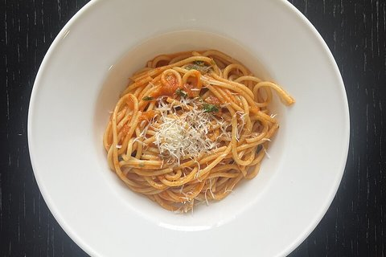
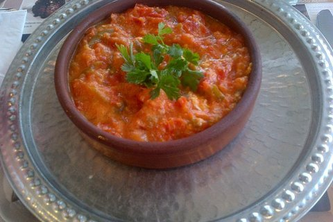
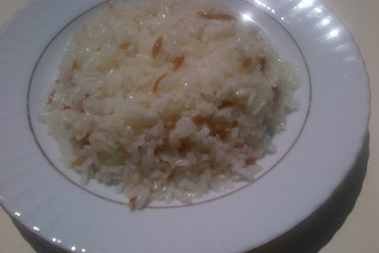
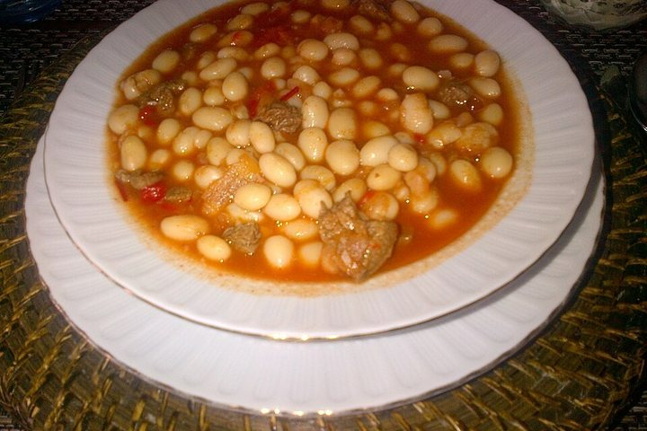
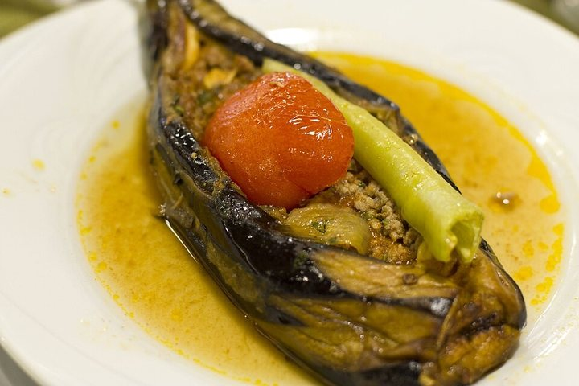
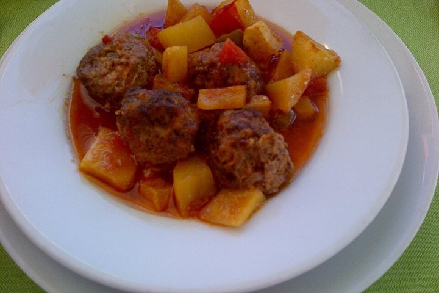

Ana YemeklerKahvaltıdan akşam yemeğine her öğüne uygun, doyurucu 6 ana yemek tarifi. 
Domatesli Makarna⏱ 20 dk👥 3 kişiKolay
Az malzemeyle 20 dakikada hazırlanan pratik bir akşam yemeği.
Malzemeler- 1 paket makarna
- 2 domates, 1 yemek kaşığı salça
- 2 diş sarımsak, zeytinyağı
- Tuz, fesleğen
Yapılışı- Makarnayı tuzlu suda haşlayıp süzün.
- Sarımsağı zeytinyağında hafifçe kavurun.
- Domates ve salçayı ekleyip sos kıvamına gelene kadar pişirin.
- Sosu makarnayla karıştırıp servis yapın.
💡 Haşlama suyundan biraz sosa eklerseniz sos makarnaya daha iyi tutunur.

Menemen⏱ 15 dk👥 2 kişiKolay
Kahvaltıların yıldızı: domates, biber ve yumurtanın uyumu.
Malzemeler- 3 yumurta
- 2 domates, 2 sivri biber
- 1 yemek kaşığı tereyağı
- Tuz, pul biber
Yapılışı- Biberleri tereyağında soteleyin.
- Doğranmış domatesleri ekleyip suyunu çekene kadar pişirin.
- Yumurtaları kırıp karıştırın ve tuzunu ekleyin.
💡 Domatesin suyunu iyice çektirirseniz menemen sulu olmaz.

Pirinç Pilavı⏱ 35 dk👥 4 kişiOrta
Tane tane pilavın sırrı doğru bekletme ve demlendirmede.
Malzemeler- 2 su bardağı pirinç
- 3 su bardağı sıcak su
- 2 yemek kaşığı tereyağı, tuz
Yapılışı- Pirinci ılık suda 20 dakika bekletip yıkayın.
- Tereyağında pirinci 3-4 dakika kavurun.
- Sıcak su ve tuzu ekleyip kısık ateşte suyunu çekene kadar pişirin.
- Ocaktan alıp 10 dakika demlendirin.
💡 Demlenirken kapağın altına kâğıt havlu koyun; buhar pilava damlamaz.

Kuru Fasulye⏱ 1 gece + 60 dk👥 4 kişiOrta
Pilavın en iyi arkadaşı; Türk mutfağının vazgeçilmez tencere yemeği.
Malzemeler- 2 su bardağı kuru fasulye
- 1 soğan, 2 yemek kaşığı salça
- 3 yemek kaşığı sıvı yağ
- Sıcak su, tuz, pul biber
Yapılışı- Fasulyeyi bir gece önceden suda bekletin.
- Soğanı yağda kavurup salçayı ekleyin.
- Süzülmüş fasulye ve sıcak suyu ilave edin.
- Kısık ateşte fasulyeler yumuşayana kadar pişirin.
💡 Tuzu fasulyeler yumuşadıktan sonra ekleyin; erken eklenirse geç pişer.

Karnıyarık⏱ 60 dk👥 4 kişiOrta
Kıymalı harçla doldurulan patlıcanların fırındaki şöleni.
Malzemeler- 4 patlıcan
- 250 gr kıyma, 1 soğan
- 2 domates, 2 sivri biber
- 1 yemek kaşığı salça, sıvı yağ, tuz
Yapılışı- Patlıcanları alacalı soyup yağda kızartın.
- Soğan ve kıymayı kavurun; domates, biber ve salçayı ekleyin.
- Patlıcanları ortadan yarıp harcı doldurun.
- Üzerine domates ve biber koyup 180 derecede 25 dakika pişirin.
💡 Kızaran patlıcanları kâğıt havluya alırsanız fazla yağını çeker.

İzmir Köfte⏱ 55 dk👥 4 kişiOrta
Patates, biber ve domatesle fırında pişen sulu bir köfte.
Malzemeler- 500 gr kıyma, 1 soğan
- 1 dilim bayat ekmek içi, 1 yumurta
- 3 patates, 2 biber, 2 domates
- 1 yemek kaşığı salça, tuz, kimyon
Yapılışı- Kıyma, rendelenmiş soğan, ekmek içi, yumurta ve baharatları yoğurun.
- Köfteleri şekillendirip hafifçe kızartın.
- Kızartılmış patateslerle tepsiye dizin.
- Salçalı sosu ekleyip 180 derecede 20 dakika pişirin.
💡 Köfte harcını 30 dakika buzdolabında dinlendirirseniz köfteler dağılmaz.
| |